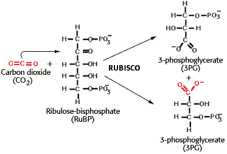

Photosynthesis Problem Set 2
Problem 1 Tutorial: Calvin experiment
As discovered by Calvin, when algal cells are exposed to radioactive carbon
dioxide in the light for only 1 second, the compound that is most quickly
and most extensively labeled with radioactive C has how many carbon
atoms?
Carbon Dioxide Fixation
When algal cells are exposed to radioactive carbon dioxide in the light for only 1 second, the compound that is most quickly and most extensively labeled with radioactive C is 3-phosphoglycerate (3PG). The incorporation of atmospheric CO2 into the biological molecule 3PG is catalyzed by
RUBISCO, the most abundant enzyme in the plant world, and perhaps on the planet.
Ribulose-1,5-bisphosphate Carboxylase Reaction



University of Arizona
Wednesday, September 11, 1996
Contact the Development Team
http://biology.arizona.edu
All contents copyright © 1996. All rights reserved.